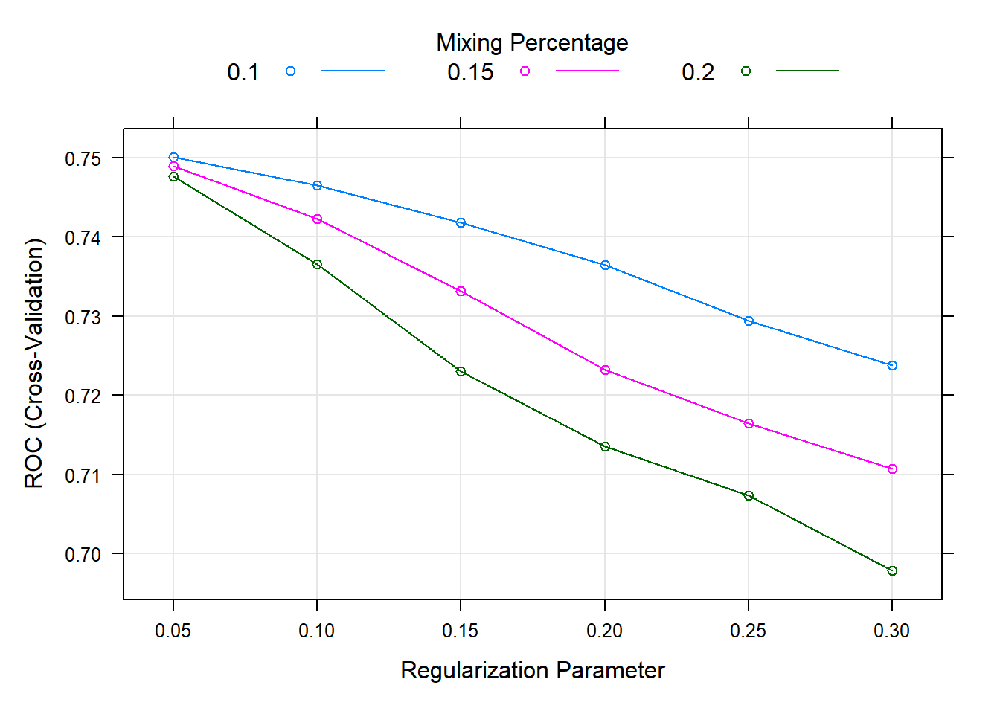

Chapter 6 Supervised Learning
6.1 Read previously saved data
ObsData <- readRDS(file = "data/rhcAnalytic.RDS")
levels(ObsData$Death)=c("No","Yes")
out.formula1 <- readRDS(file = "data/form1.RDS")
out.formula2 <- readRDS(file = "data/form2.RDS")6.2 Continuous outcome
6.2.1 Cross-validation LASSO
ctrl <- trainControl(method = "cv", number = 5)
fit.cv.con <- train(out.formula1, trControl = ctrl,
data = ObsData, method = "glmnet",
lambda= 0,
tuneGrid = expand.grid(alpha = 1,
lambda = 0),
verbose = FALSE)
fit.cv.con## glmnet
##
## 5735 samples
## 50 predictor
##
## No pre-processing
## Resampling: Cross-Validated (5 fold)
## Summary of sample sizes: 4588, 4587, 4587, 4589, 4589
## Resampling results:
##
## RMSE Rsquared MAE
## 25.14179 0.05746966 15.20167
##
## Tuning parameter 'alpha' was held constant at a value of 1
## Tuning
## parameter 'lambda' was held constant at a value of 06.2.2 Cross-validation Ridge
ctrl <- trainControl(method = "cv", number = 5)
fit.cv.con <-train(out.formula1, trControl = ctrl,
data = ObsData, method = "glmnet",
lambda= 0,
tuneGrid = expand.grid(alpha = 0,
lambda = 0),
verbose = FALSE)
fit.cv.con## glmnet
##
## 5735 samples
## 50 predictor
##
## No pre-processing
## Resampling: Cross-Validated (5 fold)
## Summary of sample sizes: 4588, 4589, 4587, 4588, 4588
## Resampling results:
##
## RMSE Rsquared MAE
## 25.0993 0.05746023 15.22744
##
## Tuning parameter 'alpha' was held constant at a value of 0
## Tuning
## parameter 'lambda' was held constant at a value of 06.3 Binary outcome
6.3.1 Cross-validation LASSO
ctrl<-trainControl(method = "cv", number = 5,
classProbs = TRUE,
summaryFunction = twoClassSummary)
fit.cv.bin<-train(out.formula2, trControl = ctrl,
data = ObsData, method = "glmnet",
lambda= 0,
tuneGrid = expand.grid(alpha = 1,
lambda = 0),
verbose = FALSE,
metric="ROC")
fit.cv.bin## glmnet
##
## 5735 samples
## 50 predictor
## 2 classes: 'No', 'Yes'
##
## No pre-processing
## Resampling: Cross-Validated (5 fold)
## Summary of sample sizes: 4588, 4588, 4589, 4588, 4587
## Resampling results:
##
## ROC Sens Spec
## 0.7546214 0.4634742 0.8535823
##
## Tuning parameter 'alpha' was held constant at a value of 1
## Tuning
## parameter 'lambda' was held constant at a value of 0- Not okay to select variables from a shrinkage model, and then use them in a regular regression
6.3.2 Cross-validation Ridge
ctrl<-trainControl(method = "cv", number = 5,
classProbs = TRUE,
summaryFunction = twoClassSummary)
fit.cv.bin<-train(out.formula2, trControl = ctrl,
data = ObsData, method = "glmnet",
lambda= 0,
tuneGrid = expand.grid(alpha = 0,
lambda = 0),
verbose = FALSE,
metric="ROC")
fit.cv.bin## glmnet
##
## 5735 samples
## 50 predictor
## 2 classes: 'No', 'Yes'
##
## No pre-processing
## Resampling: Cross-Validated (5 fold)
## Summary of sample sizes: 4588, 4589, 4588, 4587, 4588
## Resampling results:
##
## ROC Sens Spec
## 0.7528764 0.4610002 0.8524987
##
## Tuning parameter 'alpha' was held constant at a value of 0
## Tuning
## parameter 'lambda' was held constant at a value of 06.3.3 Cross-validation Elastic net
- Alpha = mixing parameter
- Lambda = regularization or tuning parameter
-
We can use
expand.gridfor model tuning
ctrl<-trainControl(method = "cv", number = 5,
classProbs = TRUE,
summaryFunction = twoClassSummary)
fit.cv.bin<-train(out.formula2, trControl = ctrl,
data = ObsData, method = "glmnet",
tuneGrid = expand.grid(alpha = seq(0.1,.2,by = 0.05),
lambda = seq(0.05,0.3,by = 0.05)),
verbose = FALSE,
metric="ROC")
fit.cv.bin## glmnet
##
## 5735 samples
## 50 predictor
## 2 classes: 'No', 'Yes'
##
## No pre-processing
## Resampling: Cross-Validated (5 fold)
## Summary of sample sizes: 4587, 4588, 4588, 4588, 4589
## Resampling results across tuning parameters:
##
## alpha lambda ROC Sens Spec
## 0.10 0.05 0.7530058 0.3695986568 0.8965624
## 0.10 0.10 0.7493765 0.2742170043 0.9336408
## 0.10 0.15 0.7445050 0.1748601904 0.9677600
## 0.10 0.20 0.7388230 0.0894189104 0.9871036
## 0.10 0.25 0.7322015 0.0253323951 0.9959703
## 0.10 0.30 0.7254256 0.0019863462 0.9997315
## 0.15 0.05 0.7519700 0.3537017148 0.9035477
## 0.15 0.10 0.7453497 0.2200659235 0.9529844
## 0.15 0.15 0.7356439 0.1023307779 0.9849553
## 0.15 0.20 0.7247385 0.0178820538 0.9959695
## 0.15 0.25 0.7170856 0.0004962779 0.9997315
## 0.15 0.30 0.7107273 0.0000000000 1.0000000
## 0.20 0.05 0.7507079 0.3328284138 0.9140258
## 0.20 0.10 0.7394339 0.1693974297 0.9674904
## 0.20 0.15 0.7242395 0.0372492377 0.9919405
## 0.20 0.20 0.7140885 0.0014900683 0.9997315
## 0.20 0.25 0.7069905 0.0000000000 1.0000000
## 0.20 0.30 0.6971477 0.0000000000 1.0000000
##
## ROC was used to select the optimal model using the largest value.
## The final values used for the model were alpha = 0.1 and lambda = 0.05.plot(fit.cv.bin)
6.3.4 Decision tree
-
Decision tree
- Referred to as Classification and regression trees or CART
-
Covers
- Classification (categorical outcome)
- Regression (continuous outcome)
-
Flexible to incorporate non-linear effects automatically
- No need to specify higher order terms / interactions
- Unstable, prone to overfitting, suffers from high variance
6.3.4.1 Simple CART
require(rpart)
summary(ObsData$DASIndex) # Duke Activity Status Index## Min. 1st Qu. Median Mean 3rd Qu. Max.
## 11.00 16.06 19.75 20.50 23.43 33.00cart.fit <- rpart(Death~DASIndex, data = ObsData)
par(mfrow = c(1,1), xpd = NA)
plot(cart.fit)
text(cart.fit, use.n = TRUE)
print(cart.fit)## n= 5735
##
## node), split, n, loss, yval, (yprob)
## * denotes terminal node
##
## 1) root 5735 2013 Yes (0.3510026 0.6489974)
## 2) DASIndex>=24.92383 1143 514 No (0.5503062 0.4496938)
## 4) DASIndex>=29.14648 561 199 No (0.6452763 0.3547237) *
## 5) DASIndex< 29.14648 582 267 Yes (0.4587629 0.5412371) *
## 3) DASIndex< 24.92383 4592 1384 Yes (0.3013937 0.6986063) *require(rattle)
require(rpart.plot)
require(RColorBrewer)
fancyRpartPlot(cart.fit, caption = NULL)6.3.4.1.1 AUC
require(pROC)
obs.y2<-ObsData$Death
pred.y2 <- as.numeric(predict(cart.fit, type = "prob")[, 2])
rocobj <- roc(obs.y2, pred.y2)## Setting levels: control = No, case = Yes## Setting direction: controls < casesrocobj##
## Call:
## roc.default(response = obs.y2, predictor = pred.y2)
##
## Data: pred.y2 in 2013 controls (obs.y2 No) < 3722 cases (obs.y2 Yes).
## Area under the curve: 0.5912plot(rocobj)auc(rocobj)## Area under the curve: 0.59126.3.4.2 Complex CART
More variables
out.formula2## Death ~ Disease.category + Cancer + Cardiovascular + Congestive.HF +
## Dementia + Psychiatric + Pulmonary + Renal + Hepatic + GI.Bleed +
## Tumor + Immunosupperssion + Transfer.hx + MI + age + sex +
## edu + DASIndex + APACHE.score + Glasgow.Coma.Score + blood.pressure +
## WBC + Heart.rate + Respiratory.rate + Temperature + PaO2vs.FIO2 +
## Albumin + Hematocrit + Bilirubin + Creatinine + Sodium +
## Potassium + PaCo2 + PH + Weight + DNR.status + Medical.insurance +
## Respiratory.Diag + Cardiovascular.Diag + Neurological.Diag +
## Gastrointestinal.Diag + Renal.Diag + Metabolic.Diag + Hematologic.Diag +
## Sepsis.Diag + Trauma.Diag + Orthopedic.Diag + race + income +
## RHC.userequire(rpart)
cart.fit <- rpart(out.formula2, data = ObsData)6.3.4.2.1 CART Variable importance
cart.fit$variable.importance## DASIndex Cancer Tumor age
## 123.2102455 33.4559400 32.5418433 24.0804860
## Medical.insurance WBC edu Cardiovascular.Diag
## 14.5199953 5.6673997 3.7441554 3.6449371
## Heart.rate Cardiovascular Trauma.Diag PaCo2
## 3.4059248 3.1669125 0.5953098 0.2420672
## Potassium Sodium Albumin
## 0.2420672 0.2420672 0.19843666.3.4.2.2 AUC
require(pROC)
obs.y2<-ObsData$Death
pred.y2 <- as.numeric(predict(cart.fit, type = "prob")[, 2])
rocobj <- roc(obs.y2, pred.y2)## Setting levels: control = No, case = Yes## Setting direction: controls < casesrocobj##
## Call:
## roc.default(response = obs.y2, predictor = pred.y2)
##
## Data: pred.y2 in 2013 controls (obs.y2 No) < 3722 cases (obs.y2 Yes).
## Area under the curve: 0.5981plot(rocobj)
auc(rocobj)## Area under the curve: 0.59816.3.4.3 Cross-validation CART
set.seed(504)
require(caret)
ctrl<-trainControl(method = "cv", number = 5,
classProbs = TRUE,
summaryFunction = twoClassSummary)
# fit the model with formula = out.formula2
fit.cv.bin<-train(out.formula2, trControl = ctrl,
data = ObsData, method = "rpart",
metric="ROC")
fit.cv.bin## CART
##
## 5735 samples
## 50 predictor
## 2 classes: 'No', 'Yes'
##
## No pre-processing
## Resampling: Cross-Validated (5 fold)
## Summary of sample sizes: 4587, 4589, 4587, 4589, 4588
## Resampling results across tuning parameters:
##
## cp ROC Sens Spec
## 0.007203179 0.6304911 0.2816488 0.9086574
## 0.039741679 0.5725283 0.2488649 0.8981807
## 0.057128664 0.5380544 0.1287804 0.9473284
##
## ROC was used to select the optimal model using the largest value.
## The final value used for the model was cp = 0.007203179.# extract results from each test data
summary.res <- fit.cv.bin$resample
summary.res## ROC Sens Spec Resample
## 1 0.6847220 0.3746898 0.8590604 Fold1
## 2 0.6729625 0.2985075 0.8924731 Fold2
## 3 0.6076153 0.2754342 0.9287634 Fold5
## 4 0.5873154 0.2238806 0.9274194 Fold4
## 5 0.5998401 0.2357320 0.9355705 Fold36.4 Ensemble methods (Type I)
Training same model to different samples (of the same data)
6.4.1 Cross-validation bagging
- Bagging or bootstrap aggregation
- independent bootstrap samples (sampling with replacement, B times),
- applies CART on each i (no prunning)
- Average the resulting predictions
- Reduces variance as a result of using bootstrap
set.seed(504)
require(caret)
ctrl<-trainControl(method = "cv", number = 5,
classProbs = TRUE,
summaryFunction = twoClassSummary)
# fit the model with formula = out.formula2
fit.cv.bin<-train(out.formula2, trControl = ctrl,
data = ObsData, method = "bag",
bagControl = bagControl(fit = ldaBag$fit,
predict = ldaBag$pred,
aggregate = ldaBag$aggregate),
metric="ROC")## Warning: executing %dopar% sequentially: no parallel backend registeredfit.cv.bin## Bagged Model
##
## 5735 samples
## 50 predictor
## 2 classes: 'No', 'Yes'
##
## No pre-processing
## Resampling: Cross-Validated (5 fold)
## Summary of sample sizes: 4587, 4589, 4587, 4589, 4588
## Resampling results:
##
## ROC Sens Spec
## 0.7506666 0.4485809 0.8602811
##
## Tuning parameter 'vars' was held constant at a value of 63-
bagging improves prediction accuracy
- over prediction using a single tree
-
Looses interpretability
- as this is an average of many diagrams now
- But we can get a summary of the importance of each variable
6.4.1.1 Bagging Variable importance
caret::varImp(fit.cv.bin, scale = FALSE)## ROC curve variable importance
##
## only 20 most important variables shown (out of 50)
##
## Importance
## age 0.6159
## APACHE.score 0.6140
## DASIndex 0.5962
## Cancer 0.5878
## Creatinine 0.5835
## Tumor 0.5807
## blood.pressure 0.5697
## Glasgow.Coma.Score 0.5656
## Disease.category 0.5641
## Temperature 0.5584
## DNR.status 0.5572
## Hematocrit 0.5525
## Weight 0.5424
## Bilirubin 0.5397
## income 0.5319
## Immunosupperssion 0.5278
## RHC.use 0.5263
## Dementia 0.5252
## Congestive.HF 0.5250
## Hematologic.Diag 0.52506.4.2 Cross-validation boosting
- Boosting
- sequentially updated/weighted bootstrap based on previous learning
set.seed(504)
require(caret)
ctrl<-trainControl(method = "cv", number = 5,
classProbs = TRUE,
summaryFunction = twoClassSummary)
# fit the model with formula = out.formula2
fit.cv.bin<-train(out.formula2, trControl = ctrl,
data = ObsData, method = "gbm",
verbose = FALSE,
metric="ROC")
fit.cv.bin## Stochastic Gradient Boosting
##
## 5735 samples
## 50 predictor
## 2 classes: 'No', 'Yes'
##
## No pre-processing
## Resampling: Cross-Validated (5 fold)
## Summary of sample sizes: 4587, 4589, 4587, 4589, 4588
## Resampling results across tuning parameters:
##
## interaction.depth n.trees ROC Sens Spec
## 1 50 0.7218938 0.2145970 0.9505647
## 1 100 0.7410292 0.2980581 0.9234228
## 1 150 0.7483014 0.3487142 0.9030028
## 2 50 0.7414513 0.2960631 0.9263816
## 2 100 0.7534264 0.3869684 0.8917212
## 2 150 0.7575826 0.4187512 0.8777477
## 3 50 0.7496078 0.3626125 0.9070358
## 3 100 0.7579645 0.4078244 0.8764076
## 3 150 0.7637074 0.4445909 0.8702298
##
## Tuning parameter 'shrinkage' was held constant at a value of 0.1
##
## Tuning parameter 'n.minobsinnode' was held constant at a value of 10
## ROC was used to select the optimal model using the largest value.
## The final values used for the model were n.trees = 150, interaction.depth =
## 3, shrinkage = 0.1 and n.minobsinnode = 10.plot(fit.cv.bin)6.5 Ensemble methods (Type II)
Training different models on the same data
6.5.1 Super Learner
- Large number of candidate learners (CL) with different strengths
- Parametric (logistic)
- Non-parametric (CART)
- Cross-validation: CL applied on training data, prediction made on test data
- Final prediction uses a weighted version of all predictions
- Weights = coef of Observed outcome ~ prediction from each CL
6.5.2 Steps
Refer to this tutorial for steps and examples!
In this chapter, we will move beyond statistical regression, and introduce some of the popular machine learning methods.